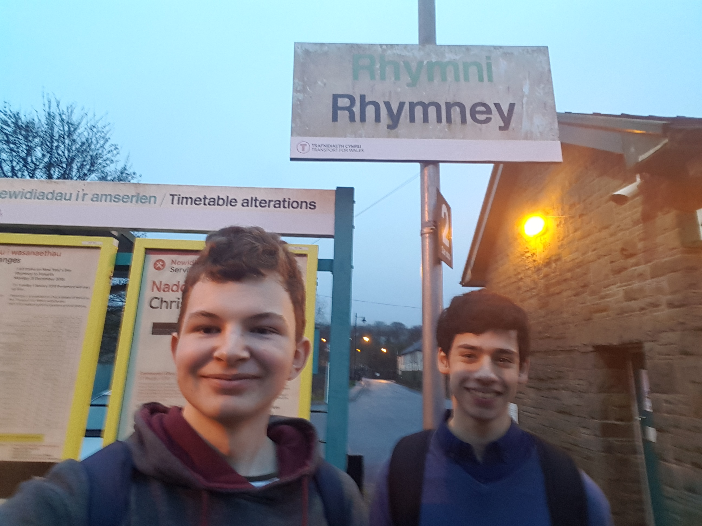
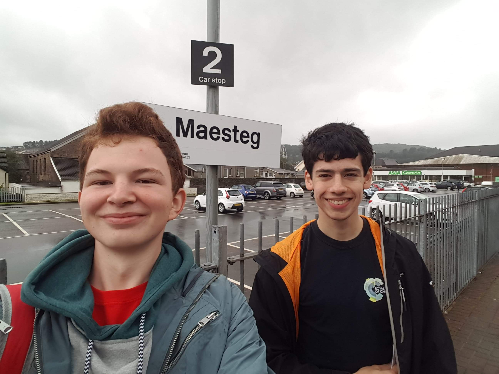
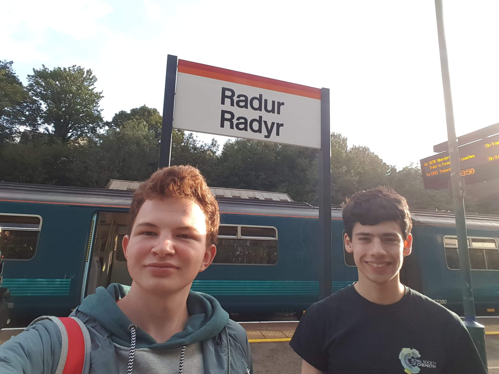

This is the main part of our adventures, from the valleys to the highlands, so a new format is needed, click on a tab and
read the account of the particular adventure, written by either Matthew or James, I am sure you can work out who wrote it!
This was the first of the Nutty Trains adventures, although at the time it was very impromptu. Having just finished in college
for the morning, just a few days before Christmas, Matthew decided to meet James. I feel that the following exchange should be
quoted:
J: Well, what are we going to do today?
M: You fancy going on the trains?
J: Valleys?
*both laughing*
M: Yes [eyes glowing with insanity]
When we arrived at CDF, we checked the boards for the next train up the Valleys, and it seemed we were destined for Treherbert.
Ad Treherbert! We rolled off the platform, in a sprinter, and towards the Valleys, this was soon to be a massive culture shock
for James, lets go up the Valley's he said, it'd be fun he said, fun it was indeed and very humourous to Matthew.
We went 'north', as the map led us to believe (we were actually travelling west), up past Cathays, Llandaff, Radyr, which soon
became very familiar to us, after numerous escapades into the deepest, darkest fringes of 'civilisation', as we continued our
masochism. To avoid the ire of commuters in Cardiff, we decided to switch carriages every time we visited a station. In this
way, another NT rule was born, completely impromptu. Whilst still in the Cardiff city boundary, we noticed successive stations
becoming quieter and more dilapidated, a sign of things to come.
The city ended abruptly after Radyr, and we were surrounded by nice contryside, only for it to give way to a massive industrial
estate, followed by miles and miles and miles of terraced houses, row after row. We were now penetrating the valleys. On the way
up, we jumped off, took pictures and then jumped back on quickly at every station apart from Nantgarw, the best station
ever, because the Treherbert train didn't call at Nantgarw. As we ascended further, evening drew in, and the forests
clinging to the ever-steeper valley sides became shrouded in mist, then draped in a thick fog.
The colour of the sky had acquired a faint brown tinge by the time we hit Treorchy, but we still weren't at the terminus. We got
many puzzled looks on our upward journey - why would anyone put themselves through this torture? Someone asked 'right boys, so
what 'ewe doin' then?', the first of many such people, on all our adventures. Treherbert was our first real taste of the valleys.
We got out of the train, and stood on the single platform, in front of a row a terraced houses overlooking the railway. The
track continued into a disused tunnel, stretching further up the valley.
The valley itself began to climb sharply, with the trees thinning and giving away to gorse and bracken, and a light rain was
falling, feeling almost like a veil. It really looked like the end of the world. The village was similarly abandoned. Fewer than
5 passengers got on or off the train, no-one was waiting by the bus stop, and the streets of terraced houses were desolate and
abandoned. It was startling to think that we were only about 10 miles away from home. It was almost as if we were in another
world.
We got back on the train, and sat down to plan our next journey. Dusk was rapidly approaching and the rain was now very heavy,
but we decided to change at Pontypridd and head to Merthyr Tydfil. We arrived in Pontypridd (surprisingly, a very nice and very
large station) and ran from platform to platform in the rain and over the bridge, laughing at our lack of sanity (a regular
occurance for these adventures - James would later remark that an NT adventure was more tiring than a parkrun), then joined a
group of locals waiting on some dodgy side platform for our first pacer of the day to arrive - it was time to try and get
killed a second time!
This isnt tourism its masochism
The locals on the platform were diverse and varied - a real taste of the cosmopolitan nature of the valleys - several family
groups having seperate domestics, stopping only to stare at us, ket-users, crack-users, spice-users and weed-users, all looking
at us in disdain for disturbing their illegal obsessions, and the elderly women from up the valley, having finished their annual
trip to the great city of Pontypridd, watching us outsiders like hawks. We alighted a double (class 800) pacer and went back up
north, to torture ourselves once more. The stations got slowly more and more desolate and poor as night drew in. We stood in the
wheelchair area whilst our fellow passengers enjoyed their drugs.
At this point, it was dark, raining and everybody on the train feared for their lives as the pacer hurled itself down the track,
at speeds that felt illegal. The windows were shaking, the doors were opening mid-journey, the roof was leaking, half the seats
were missing, water was streaming down the inside of the windows, and the brakes on the train screamed into life every time the
train went too far over the speed limit, all in the pitch black of night.
We carried on jumping on and off the train and drawing attention to ourselves, especially from the bloke brandishing a knife and
doing Ketamine. All we knew about ketamine was that it contains Benzene ⏣ (A2 Organic Chemistry). Fortunately, laughing
maniacally every time something went wrong with the train, repeating "This is nuts, this is nuts, this is really, truly nuts"
ad nauseam, and having an insane glint in our eyes kept the other passengers at bay. They weren't the most deranged ones on the
train that day!
As we pulled into the wonderful town of Merthyr Tydfil, having just run down to the sign at Pentre-Bach, we noticed that the
train had terminated in the middle of a Tesco car park. Duly, we renamed the station on our faithful (now historic) map as
'Merthyr Tydfil Tesco Station'. This was our cue to go for a run. The guard told us: "We depart in 5 minutes boys", so we had 5
minutes to explore Merthyr Tydfil Tesco. Despite this being only our first adventure, whilst visiting it we knew this station
was to be legendary in relation to NT stations and we still to this day aim to find the stations as legendary as Merthyr Tydfil
Tesco. It has even seen off fierce competition from Maesteg Asda Station, Fishguard Harbour and Camborne! We took our photo in
front of the station sign, which was the first of many.
Having thoroughly explored the entrance to Tesco, we got back on the train, and settled into the long journey back to Cardiff.
On the way back down, we ticked off the final missing station, Nantgarw, which TfW insists is actually called 'Treforest Estate'.
Rubbish. We got to tick that legendary station off on the way back. It is a weird station with just one island platform, in the
middle of two tracks. James couldn't spot how it worked, so just took the photo and jumped back on, but Matthew, having already
been there twice before, explained that it had some dodgy tunnel leading out from the centre, under the tracks, and onto a dirt
track through an industrial zone. Legendary.
Having arrived in Cardiff, and with 22 stations ticked off, we'd done well, so you'd think called it a day then. No, of course
not. There are plenty more stations to tick off! We arrived back to Cardiff Queen Street, with our lives in our hands and
disembarked with the druggies gang members and valley folk. We ran to the side platform for the sprinter shuttle service to
Cardiff Bay, and travelled down to tick off our final Cardiff/valleys station that day. At this point we were hungry and we
decided on a classic Pizza Express, which was still a recent discovery for us and soon to become a go-to for food and another
NT tradition.
James made a mistake by ordering the hottest pizza they offered "Because quadrilaterals > circles", then proceeded to eat of
all the mitigating goats cheese off the pizza, leaving only the spicy bits behind. He had a fun time enjoying the remainder of
his meal, needless to say. As we headed back to the station, the nuttiness was rekindled in us after some food and it was time
to 'wait' for the train. Yeah... instead of waiting, we walked to the end of the platform and then raced the train back down the
platform. (Matthew won).
We headed back to Cardiff Central, then got a Class 800 back to Swansea and Neath respectively and ticked off the rest of the
stations on the mainline PAD services. What an amazing end to our first full adventure.
People say, fool me once, shame on me, fool me twice shame on you. We feel the same thing may not be true for the Valleys,
as there was no fooling here, we went up by choice! So we started this one slightly later than the other NT adventures, in the
middle of the afternoon, but we still had plenty of time for insanity, don't you worry dear reader!
1 trip up the valleys evidently wasn't enough to satiate our appetite for masochism, so just a few days after Christmas, we
headed back for more. Armed with another Valleys Ranger ticket, we departed from Cardiff Central yet again, and jumped upon the
first valley train we saw, this time up the Rhymney Valley! We initially followed the same tracks as on our last journey, but
then curved eastwards to tackle possibly the dodgiest valley of them all. The Rhymney Valley was the longest of the valleys,
with numerous stations to tick off. That meant plenty of running at various stations for James.
It took us a while to work out where we were as we approached Caerphilly, as the town appeared to have multiple stations (it
turns out it had 3). From the elevated track, we could see for miles - we could see the castle in the distance... and the town,
unfortunately. Having gone up the valleys expecting steep gorges and narrow openings in the rock, the plain around Caerphilly
disorientated Matthew a little, but we quickly progressed to nuttier valley towns, to make sure he was kept insane.
Fortunately, the track soon became nuttier, until we were held at a halt, awaiting the green signal to move onto the single
track line. This was Matthew's first journey on a single track railway. We rattled up the line, now surrounded by the familar
sights of terraced houses, valley sides that blotted out the sun in the late afternoon, disused mine workings, crowds of drug
addicts having domestics, and the sight of old women glaring out of their windows at this new fangled train travelling way too
fast through their village.
On the way up, we unfortunately missed Gilfach Fargoed, due to the strange service pattern in the Rhymney Valley. We will visit
Gilfach Fargoed one day, in order to tick it off as our final Valley Line station - the crowning glory on our trusty map. When
there, we will also recreate the famous VF video when measuring the platform! The train rattled all the way up to
Rhymney, where we disembarked, to take our photo in front of the sign once more, continuing our tradition. It was
getting dark already, so after wandering about the station and the vincinity for 10 minutes, we got back on the train
to Cardiff.

On the way back, we tucked into a bag of Salt and Vinegar crisps (which we'd been saving since Cardiff). Here was yet another
NT tradition, forged in the fire of the valleys, on those early December adventures. When we approached Cardiff, James
expressed a desire to do a Geoff and Vicky, so we disembarked at Heath High Level, and sprinted down the slippery
staircase, along the main road, before turning down a dodgy alleyway to to Heath Low Level, on the City Line. The
rickety pacer emerged from the tunnel a few minutes later, and we continued down the track to Cardiff Queen Street.
Once again, we disembarked here, but this time, decided to wander through Cardiff City Centre.
Fortunately, we had been hardened by the sights of the valleys, so no amount of violence or drug abuse could scare us now. We
walked to St Davids shopping centre, and decided to try Nandos, to see what all the fuss was about, but were thoroughly
underwhelmed. We reminisced about our school days and about what we'd been up to recently, before getting back on the train and
heading home. A few days later, James had to head back to Cornwall, meaning this was the last NT adventure that Christmas.
Jumping on and off trains to request-only platforms, on a line with 4 trains per day? What could go wrong?
Some people run marathons, in our younger years, these people were seemed as maniacs to us (Although, James is doing a half
next march at Pembrey... god, it's in March?! I haven't started training yet.). Seeming we undertook this adventure, you dear
reader must see us as hypocrites, as this was not a marathon it was an Ultra. 4.5hrs of jumping on and off trains, continually
in the middle of nowhere.
This adventure started like every other, Matthew going from Neath to Swansea, James getting on a bus to Swansea (The bus
genes are still strong) and meeting at Swansea, this time at 9am, in inticipation of the 0937 service to Shrewsbury, calling
at... every little hamlet in the middle of nowhere! This was to be different from the Valley trips as this was planned, in
relative advance. We were struck instantly with a delay, as we stood on the platform, with another prospective train nutter, he
gleemed with excitement as he watch the two trains being unable to be parted. At this moment, we remembered back to our
religious education and thought... "we need moses."
Luckily, after much pushing, shoving and huffing by the driver, the two seperated and now we were one step closer to the holy
grail of Nutty Train adventures. Soon we were permitted to board, the one car extraviganza, that was to take us all the way up
to Shrewsbury. We showed the guard our valley rangers and before we boarded, with timetable in hand, James asked "Now, how many
request stops can we call at?", the driver looked slightly puzzled, but at the same time had a gleam in his eyes, he replied,
"Well I am sorry boys, we are on a tight schedule, not many", James quickly replied, "Not even Sugar Loaf?", the guard permitted
us to stop at Sugar Loaf, for reasons we were to find out later.
We were lucky with our guard as he was a jolly fellow and he liked what we were doing, I suppose it gets really really boring
and samey uppa Heart of Wales. For the first part of our journey, part of the lines we had travelled before, we were joined by
the locals of Bynea and their associates, we soon were right at home with the counterfit valley people. Ketamine, Stabbings,
Domestics, none of that stuff fazed us now! We were joined by some employees of TfW, who took particular interest in our
platform escapades. So did the guard, I think this may be the best place to add the fact that the Arriva TfW guards are
extremely lovely and understanding of our cause.
So we got to the new track and we grabbed our bags and got ready to start jumping on and off, 4.5hrs, this was going to be tough
one. So our first 'new' station was Llangenech, we jumped off, not expecting to stop and jumped back on, one down... probably
about 30 more to go. So we then did the next stop... and the next... and the next. The next notable stations were the Swansea
X / 16 termini, so firstly it was Pontarduluis, which was a little quaint gravelled station with many leaves on the ground.
James approved of this station very very much.
Having visited seemingly every supermarket rail terminus in South Wales, and standing in the middle of a road,
screaming, "Run me over, 'en!", it was time for Matthew and James to admit they had a problem.
In Summer 2019, we decided it was high time to make one final trip up the valleys to tick off dozens of Valley line stations.
We set off early in the morning for once, and headed out towards Bridgend. When we arrived, we bought our Valley Ranger tickets
and set off up to Maesteg. The Maesteg valley was a classic valley line, complete with steep sides, terraced houses, and even a
supermarket terminus. We pulled up into Asda car park, and dutifully renamed the station "Maesteg Asda Station", which was
fitting, seeing as Maesteg has 2 stations, and they needed to be differentiated. The only thing that could have improved this
first leg was if we'd had a pacer.

We then headed back down the short valley to Bridgend, and continued on the line through the Vale of Glamorgan. For once,
we were on a serene, quiet valley line, with no dilapidation in sight! We were able to sit back in the long gaps between
stations and enjoy the view. This soon changed when we arrived in Barry. We alighted at the large station, admired the amazing
GWR benches painted in Arriva Blue, and waited for our service to Barry Island. Fortunately, the levels of desolation and
desperation that had characterised Valley Line trips so far were about to return, and return with a vengence.
The train arrived, and as we got on, we were surrounded by genuine holidaymakers, to our absolute surprise and bewilderment. We
questioned how anyone could possibly want to holiday in Barry Island. As we drew nearer, James was shocked by the acres of empty
car parks and the abandoned theme park. His mum had warned him not to come here. Nevertheless, we pulled up in the station, now
in the pouring rain and gale force wind, and were abandoned in Barry Island - desolation unlike anything we'd ever seen before.
We went past the abandoned theme park, and reached the embankment. The wind was nearly hurricane strength now, and we had to
lean into the wind, with our hoods scrunched over our faces, just to be able to stand. Some elderly women were less lucky.
Despite the terrible conditions, people were still selling ice cream, to our great amusement. We approached the line of shops,
and noticed that every other shop was either an arcade or a casino. We entered the largest arcade for shelter, and witnessed
possibly the saddest image to sum up NTϡ: half the rides in the arcade were broken, and the other half were not functioning.
The floor was covered with mouldy, decomposing carpet tiles in places, bin bags in others, corrugated iron in one area, and the
last section had no floor at all - it was literally built on dirt. The floor was uneven and bumpy, with a massive hill in the
middle! What madness was this? The roof was leaking water in numerous places, sometimes into buckets, sometimes onto old rides,
and sometimes onto the exposed electrical cabling. The doors towards the back were sheet metal, which had been broken through
with blow torches, and the windows all around had been smashed by bricks. This was a sight unlike any other, no matter which
valley we went to. Feeling thoroughly shocked that our masochism had reached new depths, we fled, out into the rain again.
We headed back to the station, passing a statue of a roman soldier... in Barry Island... in a theme park. What was going on?
Finally, we reached the station, only to be 2 minutes late, trapping us there for 13 more minutes. We bided our time in the
station cafe before escaping at last.
We headed north, away from the horror show of Barry Island and the elderly valley women on their annual exotic holiday, towards
Cardiff. Weirdly, James met his maths teacher from Cornwall on this journey. Before reaching Cardiff, we alighted at Grangetown
IKEA station, and walked to IKEA for lunch, which was very enjoyable. As we sat in IKEA, we took a break, and planned the rest
of our journey. Follwing some minor food shopping, we set off... away from Cardiff, back south to Penarth. Passing the
amazingly-named Dingle road, the poor train climbed relentlessly, clinging to the side of the mountain, squeezed behind rows of
houses. We reached Penarth, ticked off another spur, and headed to Cardiff at last.
Here, we spotted the All The Stations Flag flying above the station, bought the obligatory packets of salt and vinegar crisps,
and ticked off Cardiff Central, because we may or many not have messed up and forgotten to tick it off in the past. After that,
we headed north once more, to our final central Valley line, Aberdare!
We had heard many stories about Aberdare from one of our friends in school, so we were expecting the worst. On the way up, we
followed the track of the Merthyr line, reminding us of ϡ1. We then diverged at Penrhiwceiber, and James had great fun
mangling the Welsh pronounciations. Finally, we arrived at our terminus, which disappointingly, was not in a supermarket car
park. Fearing that NT was losing its nuttiness, we walked down to the main road, stood in the middle, and screamed, "Run me
over, 'en!" to the cars, who took this as a challenge. It was now time for Matthew and James to admit they had a problem.
Finally, we took our terminus sign photo, and what an amazing photo it is:
Eating our crisps on the way down, we then planned our final leg of the journey, to try and crack the Cardiff City line, an
incomplete ring around the city which Matthew had had some bad experiences with in the past. It was decided that we would
disembark at Queen Street, head anticlockwise to the terminus (inadvertently recreating Matthew's failed previous attempt at the
line), before going clockwise all the way around to Radyr, our final station. Our journey on the way back down was... interesting.
For the first time in NT, we had encountered some trainspotters. James spent most of the journey gently arguing with him/her
(we disagreed here), and defending his knowledge of trains, his memory, and our previous adventures. He also unsuccessfully
tried to promote the Real-Time Trains app that he uses. After arguing gently for an hour, we disembarked from the most awkward
train trip in history, and vowed to never again interact with trainspotters - that conversation had been a complete derailment.
We came to the conclusion that just like Geoff and Vicki, we are interested in the railways, the stations, the networks and the
places, not just the trains (although, when TfW goes around nabbing everyone else's trains, you have to pay attention to the
trains too!).
The city line went smoothly, as we ticked off the stations, and Matthew relived his PTSD. Finally, we arrived in Radyr, took a
photo, and explored the station. We then had a dilemna. 2 trains were scheduled to arrive at Radyr simultaneously. Which would
we choose? We sprinted back and forth between platforms in anticipation, almost killing James in the process. Then, a sprinter
turned up... on the wrong platform. But a rival appeared - a pacer on our platform. We eagerly awaited it, and jumped aboard! Both
trains started up, their pitiful bus engines on at maximum power, and their ill-fitting wheels screaming into life. Both began
to accelerate towards the station exit, but which would win? Would they collide? ...unfortunately not - I am still alive.
Luckily, our pacer out-paced our rival sprinter, and we headed back to Cardiff, to await our train home.
Whilst there, we laughed ourselves silly at our concept of pacer races, but laughed even harder when we witnessed the awful mess
TfW had made of repainting their fleet - they had different colour carriages coupled to one another, they had trains that they
hadn't been bothered to paint, so stuck a sticker on instead, and they even had Matthew's favourite train, the one they
accidentially painted a completely wrong colour - silver instead of white! (We know that this was a TfW cock-up, because there are
no trains in Britain which are deliberately painted silver and red). Finally, a class 43 HST turned up! What you do'in? Matthew
was gobsmacked that this supreme convocation of trains had all turned up at once. Sufficiently amused, Matthew and James headed
home after their longest ever NT journey.

Uh, James, I think there's been a mistake: I don't remember this one
Okay. Let's have a think about what is going on. I'm Matthew... or am I James? I'm not sure about that bit. This appears to be a
website. Oh look - it is our website! We seem to go on "nutty train adventures" together... we must be really, really weird!
It looks like we normally go to Cardiff, before heading up the valleys. Ohhhh - the valleys. Unfortunately, that has bit has come
back to me. One can't forget the valleys. In fact, this is starting to come back to me now. I think we had 1 valley left, so I guess
we went up this last valley to tick it off... Hmm, that seems plausible. What was it called again? Oh. Oh God. The last valley was
Ebbw Vale. I wish I'd forgotten this one.
Let's try and start from the beginning, so I can piece together what we did. James caught the train from Swansea, and Matthew joined
at Neath. I'm pretty sure Matthew brought someone along with him. Oh right, he brought his girlfriend Freya along. Wow. Matthew has
a girlfriend? Moreover, there is a 50% chance I am Matthew.... wow. Wonders will never cease.
I don't remember buying a valley ranger ticket this time. In fact, I think we'd actually planned this one out - what a complete shock!
That normally doesn't happen! It looks like we bought a ticket to Cardiff, and then from Ebbw Vale to... somewhere. That other
place escapes my mind. Either way, we got to Cardiff, and then had to leave the station, to change to Platform 0. Platform 0? My
memory must be really badly affected. Platform 0 sounds really weird and nutty - but I guess I should be expecting that. Hmm.
We caught a train quite early in the morning, I believe, and then we did our thing of jumping on and off the train at every station,
running to the station sign, taking a photo, and running back on. I hope I'm not James, because James is the one who has to do all
the running - Matthew just stands with one foot on the platform, one foot on the train. Lucky! Not only does he get to not run, he
has a chance of being dying. I really hope I'm Matthew.
Like all the other valleys, the Ebbw Valley has this strange, semi-postapocalyptic feel to it. Abandoned, decaying industry littered
the valley floor, whilst seemingly desolate streets of terraced houses hugged the steep walls of the valley. Yet the Ebbw Valley
also seemed more picturesque than the others. Lushious forests filled all remaining space in the valley, as well as magnificent
cliffs. It probably helped that the weather that day was amazing, unlike the pouring rain of our previous NT adventures. On the way
up, we stopped at π ∟, Risca & Pontymister (possibly the station name we find funniest so far), and Conti Fish Bar Station
Newbridge Station. As tempted as we were to sample the culinary delights of the Ebbw Valley, we had to move on.
We finally arrived at the terminus...and we underwhelmed? Where was the desolation, the dilapadation, the obligatory supermarket
terminus or the general aura of shittiness? Ebbw Vale was such a disappointment. Instead, it terminated at a library! Ebbw
Vale had promised us the crowning glory of the valleys, but had failed to deliver. Disgusting.
On the way back down, I remember trying to plan the remainder of our journey. Matthew's clever ticketing solution was to start
our journey from Ebbw Vale to elsewhere in the middle, doing 1/2 of the return, then the outward journey, followed by the other 1/2
of the return. This is technically illegal, but it was going to be fine, because TfW services never had conductors who marked your
ticket, right? ... The conductor marked our ticket. We were screwed.
Another failing of Matthew's illegal ticketing solution was that we couldn't get out of the barriers at Cardiff without staff assistance.
Eventually, we got out and walked to Tesco for some lunch. Here, we purchased the obligatory salt and vinegar crisps, as well as
a new NT tradition: coconut macaroons. We got back to the station, were allowed back in, and got on the train again.
Feeling he ought to defend his illegal ticketing solution, Matthew explained that it relied upon the Ebbw Vale effect - a secret
effect that wasn't even picked up by online ticketing apps - eastbound tickets from Ebbw Vale are cheaper than eastbound tickets
from Cardiff, despite passengers from Ebbw Vale having to travel through Cardiff first. We named it the "Ebbw Vale Effect" and
explained it as follows:
Ebbw Vale Effect [noun]: Ebbw Vale is so shit, they pay people to leave
We ate our lunch as we travelled down the line towards Chepstow, passing the Nazi town hall in Newport, and one of our favourite
stations, Severn Tunnel Junction. The track then curved up to follow the River Severn, as we headed out of Wales once more. Along
the banks of the severn, our sprinter passed fields of cattle and 2 Magnox nuclear power stations. Yum. Radiation. We were headed
towards Gloucester (which had some very nice mosaics in the station), but I distinctly remember not staying there - we definitely
went one stop up the line. But where could that be?
Oh. My. Word.
Now I remember everything.
This wasn't a normal place we visited. Not some crappy valley town or picturesque rural hamlet. No.
We went to "Cheltenham".
I feel as if I should begin our account of "Cheltenham" by dispelling a common misconception about the town: namely, that "Cheltenham"
is a real place.
"Cheltenham" is not a real place.
In fact, "Cheltenham" is completely fake. The houses, the streets, the shops, the people - everything. Everything is entirely fake.
You see, "Cheltenham" was built around the new HQ of your friend and mine, GCHQ, in 2003. When they built their new HQ, they had
to try and make it blend in, so they decided to construct an entire fake town around it, to try and help cover it up. In hindsight,
the Magnox nuclear power stations on the way in made complete sense. The radiation dosage you recieve through the plastic windows
of the sprinter over the miles of track by the riverside is so high, that it drugs you into believing that "Cheltenham" is actually
real. Fortunately, all 3 of us had played some of Professor Layton before - we knew how Folsense worked, so we weren't going to be
fooled here!
When we arrived in the station, it was immediately obvious that the town was fake. It was a really poor simulation. The TfW train,
which was meant to head back down the tracks to Wales, instead carried straight on for a few hundred yards, came to a halt, so the
driver could get out and have a fag. What was going on? We then left the station, and proceeded to walk towards the epicentre of
the simulation - the GCHQ HQ. We passed through a completely fake estate, with generic streets of generic houses named after poets.
They didn't even try to make it seem real.
We passed some shops, at which point some vehicles started to follow us. Shit. They knew we were outsiders. They recognised us from
our internet traffic. They knew who we were, where we were going, and what we were thinking. We started to run down the street, but
they kept up their pursuit. When we ran across the road in front of them, they tried to run us over - they couldn't allow outsiders
to get that close to the HQ! Fortunately, when we rounded the corner, they backed off. We then walked through a fake council estate
of blocks of flats, but secretly, they were just filled with communication and surveillance equipment. They didn't even try to hide
it - you could see the "TV aerials" in each apartment. Not only that, but the blocks of flats had triangular rooves like houses
- that is just sloppy simulation.
We reached the main road, then walked up to the HQ itself. We didn't dare walk right up to the barbed-wire fence - we didn't want to
tempt their snipers any further! We realised that they probably recognised us - we'd probably been there 7 times before, and they'd
sorted us out after each adventure - yet here we were again!
We then walked along the main road to the town centre, which was a much longer walk than we anticipated, but it allowed us to take
in all the fake sights along the way. We saw the GCHQ primary schools, where they train little children to hack other intelligence
agencies, we saw the rows of houses, complete with elderly women, the most low-tech mass surveillance weapon in existence, and the
armada of buses with GCHQ emblazoned on them. Matthew and James were absolutely rolling with laughter at how poorly
kept the secret is within "Cheltenham". We even saw the fake postboxes with people inside, so Matthew waved to the postbox and James
started talking to it through the letter slot. What a poor simulation.
We reached the town centre, and marvelled at the streets of fake shops, including a fake motorcycle garage, and a fake inn. We
headed up to the main street, where we admired the fake buildings and fountains, then crossed the street (dodging the GCHQ buses)
and went into the T2 shop. All 3 of us love tea, so this was a huge mistake. We each ended up buying a box of loose leaf tea, which,
admittedly, was the non-fake thing we had in Cheltenham. That and the ice cream in the fake park. T2 had some interesting teas,
including some sickly sweet ones and some very smoky ones. Matthew went for Morning Sunshine (Darjeeling+Assam+Rwandan), Freya tried
Oolong, and James had (insert tea here).
Unfortunately, despite running for a reasonable distance, we missed our scheduled train out of "Cheltenham", meaning that
we decided to catch the later CrossCountry service (all the way from the North to Penzance). We got to the station, picked up some
timetables, and returned to reality at last.
As it might be expected, the long-haul service both smelt bad as was crowded, so the three of us sat by the doors. When the conductor
arrived, he was too tired to care about our illegal ticketing solution, so he stamped our tickets and moved on. We were on the
for about 20 minutes, before we arrived at Bristol Parkway, our last station for the day. Matthew and Freya took a special photo
there, seeing as the Bristol open day almost an entire year earlier had meant a lot to them.
Eventually, we caught the GWR train back to Cardiff, whereupon Matthew and Freya were coerced into eating an entire bag of salt
and pepper crisps by James on the packed one-carriage wonder (at rush-hour) home. Matthew and Freya left at Baglan, and James continued
onto Swansea. Less than 2 weeks later, Matthew and James would head out once more for another NTϡ adventure. We will not,
however, be making another trip to "Cheltenham" - we have already been 7 times... or was it 8? I can't remember.
It was time to leave behind the comforting smells of ketamine and crack cocaine in the valleys, and venture to distant
termini, in a galaxy far, far away.